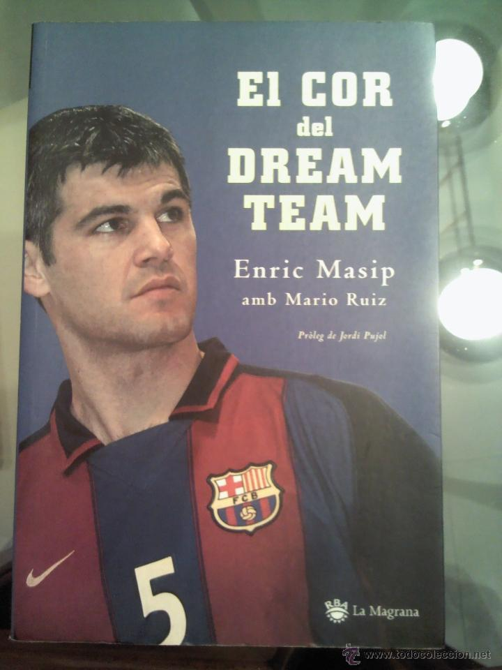
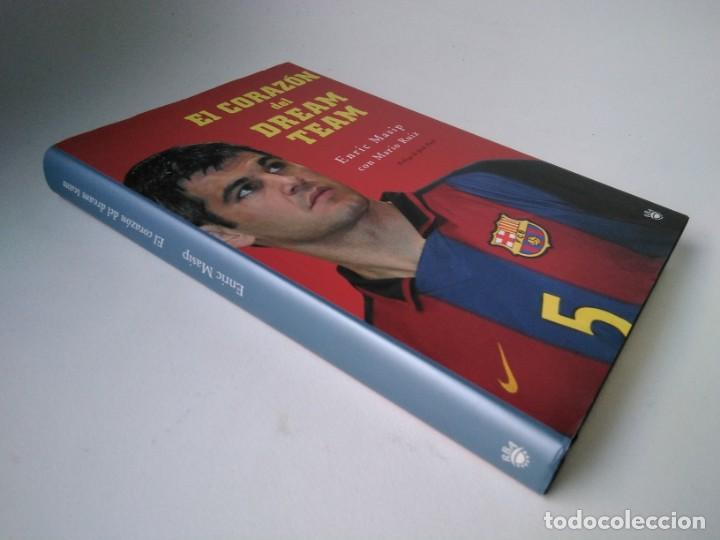

Inicio
Libro

Esta es la historia del Barcelona de balonmano, equipo que lideró y que ganó el nombre de dream team al conquistar cinco Copas de Europa consecutivas entre los años 1996 y 2000. Los orígenes, los años de formación en el Granollers, el fichaje por el Barça en 1990, los primeros pasos junto a figuras como Vujovic y Portner, el ascenso a la capitanía en 1995, los éxitos deportivos, la etapa en la selección española, su papel en el llamado «efecto Urdangarín», los problemas con su entrenador Valero Rivera, las lesiones y su retirada y posterior incorporación a la Fundació del Barça en 2004 y su trayectoria deportiva son abordados por Masip de forma amena y entusiasta.
El autor de El corazon del dream-team, es Enric Masip, esta publicación tiene doscientas sesenta y cuatro páginas. El Corazon Del Dream-team está editado por Rba Serres. Fue fundada en los noventa por Juan Grijalbo Serres en Barcelona. Tiene más de 480 libros en catálogo. RBA Satén, Osprey, RBA Molino, RBA La Magrana, RBA Bolsillo... junto a la editorial pertenecen al sello editorial Rba Grupo. Literatura Infantil Y Juvenil son las especialidades de Rba Serres. Esta editorial tiene las siguientes colecciones de textos: Mira Y Aprende y Libros De Autor. Lauren Child, Nathalie Bailleux, Ginette Hoffmann, Florence Maruéjol, Lucy Cousins... son algunos de los autores que han publicado en Rba Serres.
